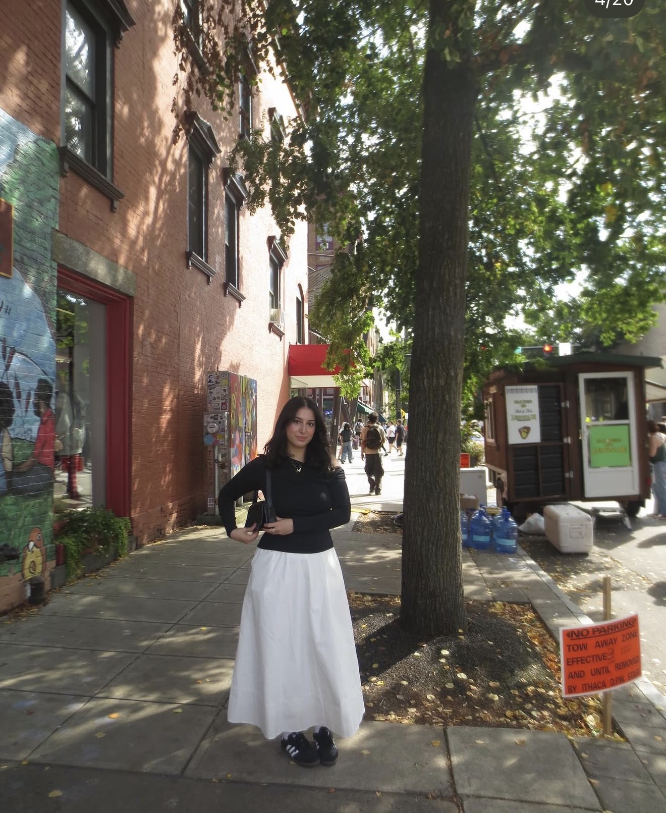

I'm passionate about learning new things whether that may be by reading a new book, watching video essays (usually on my favorite shows and movies). And I sometimes enjoy challenging myself!
Education
Hunter College, CUNY
B.A. in Computer Science (soon)
2022 – 2026
Relevant Coursework
- Discrete Mathematics
- Computer Theory
- Computer Architecture
- Software Analysis and Design
- Operating Systems
Projects
Adala — "A Necessity"
An iOS app built in Swift to improve access to social welfare resources for underserved communities. Features state-specific access to Medicaid, SNAP, and mental health services.
UI/UX Design
Led end-to-end user experience design informed by user research, integrating affirming messaging to reduce stigma and enhance usability for vulnerable users.
API Integration
Engineered API-driven data pipelines to deliver real-time, state-specific program information directly within the app. Built at Kode with Klossy 2022.
Skills
| Category | Skills |
|---|---|
| Programming | C++, Python, Swift |
| Tools | Git, GitHub, Jira, Asana, Albato |
| Other | Public Speaking, Time Management |